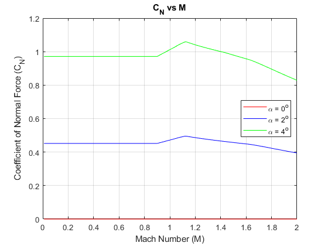
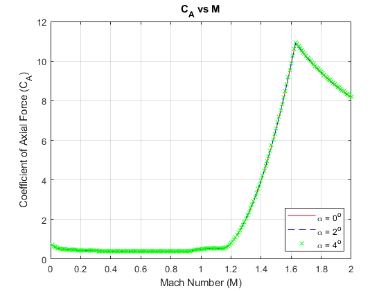

clc; clear all; close all Data = readmatrix('CFD rocket RasAero coefficients.csv'); %[Mach, alpha, CD, CD POn, CD POff, CA POn, CA POff, CL, CN, CN Pot, CN Visc, CNalpha, CP, CP(0-4deg), Re] alpha = [0; 2; 4]; %Angle of attack DataCell = cell(length(alpha),1); Indices = find(Data(:,2)==0); for i = 1:length(alpha) %Separate the Data into seperate Cells, based on alpha Indices = find(and(Data(:,2) == alpha(i), Data(:,1)<2.1)); DataCell{i} = Data(Indices(1):Indices(end),:); end %MATLAB Notation: cell{i} refers to the ith member of the cell % If that ith member is a matrix, then % cell{i}(j,k) refers to row j and column k in the matrix % stored in the ith member of the cell % In general, most data types can be stored in a cell (e.g. strings, characters, vectors, integers, etc.) %Compare CA with Power on vs Power off CAOn= [DataCell{1}(:,1), DataCell{1}(:,6), DataCell{2}(:,6), DataCell{3}(:,6)]; CAOff = [DataCell{1}(:,1), DataCell{1}(:,7), DataCell{2}(:,7), DataCell{3}(:,7)]; %Results: Same for the Mach numbers and angles of attack of our rocket, can % use either %Compare CN with Base vs Potential vs Viscous flow CNB = [DataCell{1}(:,1), DataCell{1}(:,9), DataCell{2}(:,9), DataCell{3}(:,9)]; CNP = [DataCell{1}(:,1), DataCell{1}(:,10), DataCell{2}(:,10), DataCell{3}(:,10)]; CNV = [DataCell{1}(:,1), DataCell{1}(:,11), DataCell{2}(:,11), DataCell{3}(:,11)]; %Results: Base is greater than Potential and Viscous (are "potential" and "viscous" flow property assumptions?) % In general, CN is relatively constant below 0.9, increases with max around 1.12, % decreases linearly to below the constant value % Use CNB for now % %(0.5*rho*A*v^2) figure(1) hold on plot(CNB(:,1), CNB(:,2), '-r') plot(CNB(:,1), CNB(:,3), '-b') plot(CNB(:,1), CNB(:,4), '-g') hold off grid on; box on xlim([0 2]) title('C_N vs M') xlabel('Mach Number (M)') ylabel('Coefficient of Normal Force (C_N)') legend('\alpha = 0^o', '\alpha = 2^o', '\alpha = 4^o', 'location', 'east') % figure(3) % hold on % plot(CNV(:,1), CNV(:,2), '-r') % plot(CNV(:,1), CNV(:,3), '-b') % plot(CNV(:,1), CNV(:,4), '-g') % hold off % grid on; box on % figure(3) % hold on % plot(DataCell{1}(:,1), DataCell{1}(:,7)./DataCell{1}(:,7), '-r') % plot(DataCell{2}(:,1), DataCell{2}(:,7)./DataCell{1}(:,7), '--b') % plot(DataCell{3}(:,1), DataCell{3}(:,7)./DataCell{1}(:,7), 'xg') % hold off % grid on; box on % title('C_N vs M') % xlabel('Mach Number (M)') % ylabel('Coefficient of Normal Force (C_N)') figure(4) hold on plot(CAOn(:,1), CAOn(:,2), '-r') plot(CAOn(:,1), CAOn(:,3), '--b') plot(CAOn(:,1), CAOn(:,4), 'xg') hold off grid on; box on xlim([0 2]) title('C_A vs M') xlabel('Mach Number (M)') ylabel('Coefficient of Axial Force (C_A)') legend('\alpha = 0^o', '\alpha = 2^o', '\alpha = 4^o', 'location', 'southeast') 